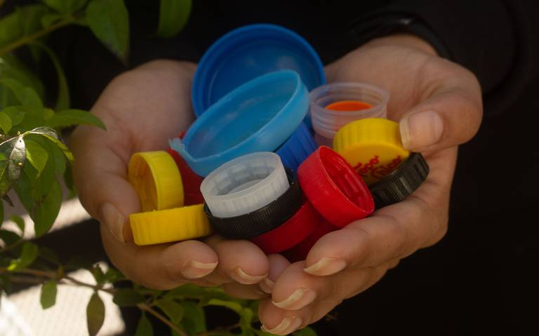
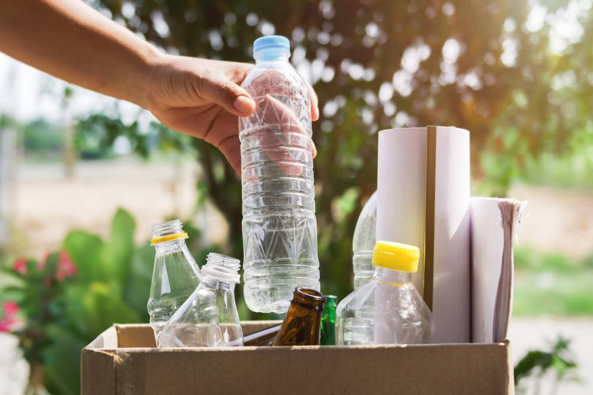
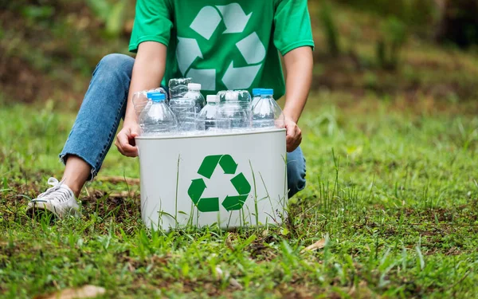
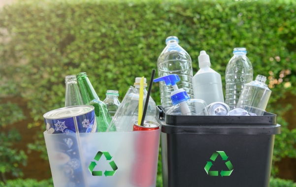
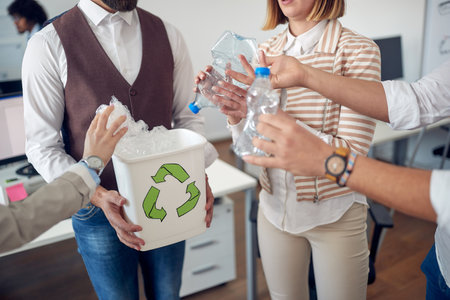

El principal motivo para reciclar el plástico es porque sus residuos tardan entre 100 y 1.000 años en degradarse. El carbon y el plástico, estaremos consumiendo menos cantidades de materias primas y de recursos naturales y energeticos no renovables. Así evitamos que estos se agoten.
Si el proceso de recuperación es industrial, existen tres tipos de papel para reciclar que se utilizan como material de primas:
1. El papel molido: recortes y trozos provenientes de la manofactura de papel
2. Los desechos pre-comsumo:materiales que ya han pasado por la fabrica de papel, y que han rechazado antes de estar preparados para el comsumo
3. Los desechos post-comsumo: materiales de papel ya utilizados que llevamos a los contenedores de reciclaje desde casa, como revistas, periódicos, material de oficina...etc.